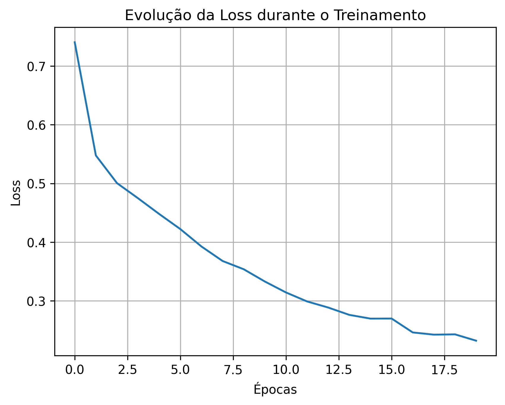
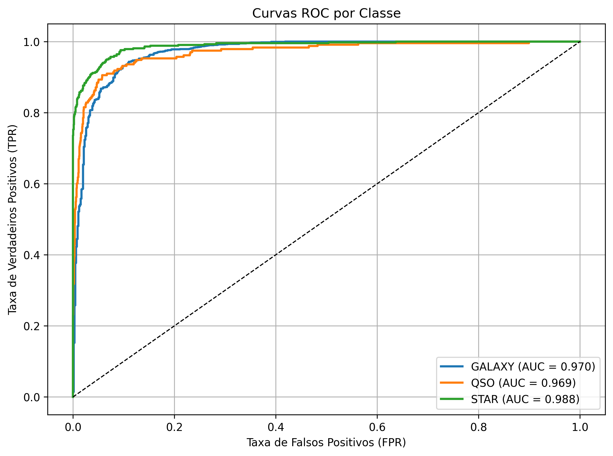
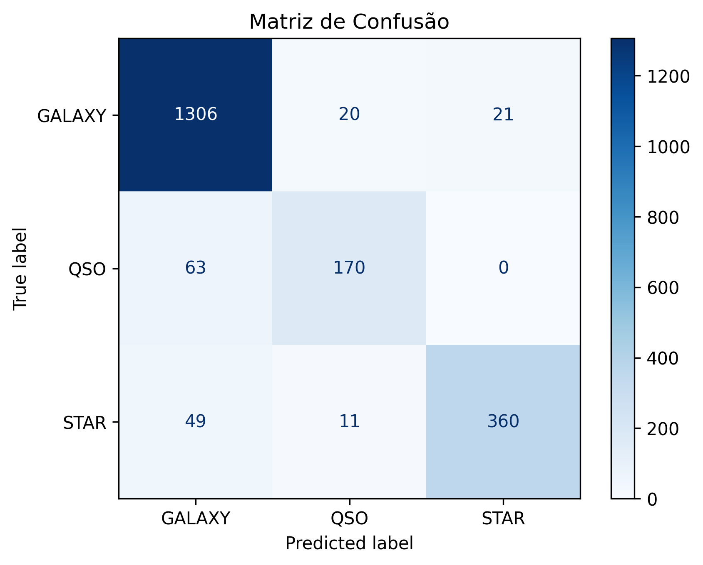
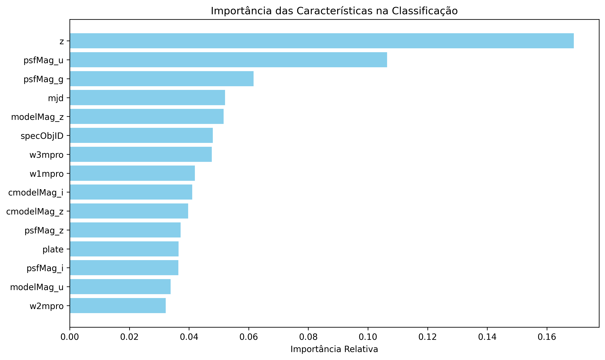
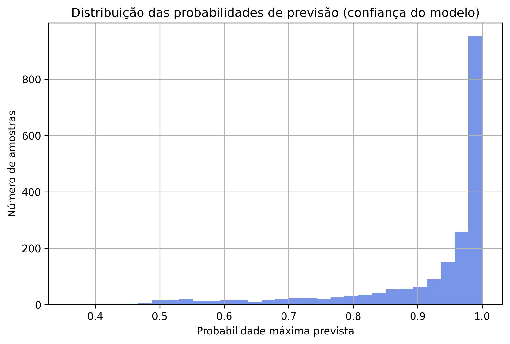

Acurácia
90,20%
Percentual de objetos classificados corretamente no conjunto de teste.
Resultados do modelo
A versão final apresentada aqui foi treinada com 10.000 objetos astronômicos e utiliza 20 características relacionadas às magnitudes fotométricas do SDSS e do WISE, além do redshift.
A avaliação foi realizada em um conjunto de teste separado, com 2.000 objetos que não participaram do treinamento.
Acurácia
Percentual de objetos classificados corretamente no conjunto de teste.
Amostras de teste
Objetos usados exclusivamente para avaliar o desempenho da rede.
Classes
GALAXY, QSO e STAR.
01 · Treinamento
Durante o treinamento, a rede compara suas previsões com as respostas corretas e calcula o quanto está errando. Esse erro é representado por um valor chamado função de perda (loss).
Ao longo das 20 épocas, a loss diminuiu de aproximadamente 0,72 para 0,26. Isso mostra que a rede foi ajustando seus parâmetros e aprendendo a representar melhor os padrões presentes nos dados de treinamento.

A queda da loss mostra que o erro foi diminuindo ao longo do treinamento. Mas aprender bem os exemplos usados no treino não é suficiente: também precisamos verificar como a rede se comporta com objetos que ela nunca viu. Por isso, os próximos resultados utilizam o conjunto de teste.
02 · Separação entre classes
Além de verificar quantos objetos foram classificados corretamente, também podemos avaliar o quanto o modelo consegue distinguir uma classe das outras.
Para isso, utilizamos as curvas ROC. Elas mostram o desempenho dessa separação em diferentes critérios de decisão. Esse comportamento pode ser resumido por uma medida chamada AUC: quanto mais próximo de 1, melhor a capacidade do modelo de diferenciar uma classe das demais.

As três classes apresentaram valores de AUC próximos de 1: 0,961 para GALAXY, 0,994 para QSO e 0,957 para STAR.
Isso indica que o modelo conseguiu separar bem as três classes. Entre elas, QSO apresentou o maior valor de AUC nesta execução.
03 · Onde o modelo acerta e se confunde
A acurácia mostra o desempenho geral da rede, mas não revela quais classes ela acertou ou confundiu. Para enxergar esses detalhes, utilizamos a matriz de confusão.
Nesse gráfico, cada linha representa a classe verdadeira do objeto e cada coluna mostra a classificação feita pela rede. Os valores na diagonal representam os acertos; os demais mostram onde uma classe foi confundida com outra.

Das 1.380 galáxias presentes no conjunto de teste, 1.308 foram classificadas corretamente. Entre os 217 quasares, foram 193 acertos. Já entre as 403 estrelas, o modelo classificou corretamente 303.
A principal confusão ocorreu entre STAR e GALAXY: 94 estrelas foram classificadas como galáxias. Isso mostra que, apesar do bom desempenho geral, algumas classes foram mais difíceis para a rede distinguir do que outras.
04 · Características mais influentes
A rede utiliza 20 características para realizar a classificação, mas nem todas influenciam o resultado da mesma forma. Podemos investigar quais informações foram mais importantes observando o que acontece quando alteramos uma característica de cada vez.
Para isso, foi utilizada uma técnica chamada importância por permutação. Cada característica é embaralhada individualmente e observamos quanto a acurácia diminui. Quanto maior a queda, maior a influência daquela característica nas classificações realizadas pelo modelo.

As maiores quedas ocorreram quando as bandas infravermelhas W1 e W2 do WISE foram embaralhadas. A acurácia caiu aproximadamente 47,1 e 40,6 pontos percentuais, respectivamente.
O redshift também apresentou influência importante, provocando uma queda de aproximadamente 17,5 pontos percentuais. Neste experimento, isso mostra que W1, W2 e redshift carregaram informações especialmente úteis para as classificações realizadas pela rede.
05 · Probabilidades previstas
Para cada objeto, a rede atribui uma probabilidade às três classes: STAR, GALAXY e QSO. A classe com a maior probabilidade é escolhida como a previsão do modelo.
O gráfico abaixo mostra qual foi essa maior probabilidade para cada objeto do conjunto de teste. Valores mais altos indicam que uma classe se destacou mais das outras na saída da rede.

Grande parte dos objetos recebeu uma probabilidade máxima próxima de 1. Isso significa que, para muitos exemplos, uma das três classes se destacou bastante das demais na saída produzida pela rede.
Porém, uma probabilidade alta não garante que a classificação esteja correta. Esses valores representam a saída matemática do modelo e não devem ser interpretados como uma medida absoluta de certeza.
Interpretação
A rede alcançou 90,20% de acurácia no conjunto de teste e apresentou alta capacidade de separação entre as três classes. Ao mesmo tempo, a análise por classe mostra que ainda existem regiões de confusão, principalmente entre estrelas e galáxias.
Esses resultados ajudam a entender tanto o potencial quanto as limitações da aplicação de redes neurais à classificação de objetos astronômicos.